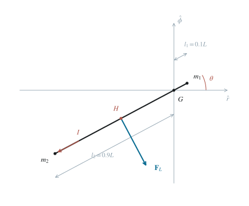
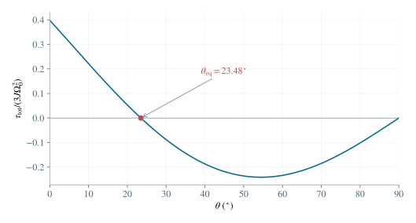

2.1 确定圆轨道参数
系统总质量 M=m1+m2=500kg，初始轨道半径 r0=6.77×106m。在 r0L 的最低阶，系统视为位于质心的一个质点。万有引力提供向心力：
r02GMEM=r0Mv02,v0=r0GME,Ω0=r03GME. （1）v0≃7.67×103ms−1,Ω0≃1.13×10−3s−1. （2）初始轨道周期为 T0=Ω02π≃5.55×103s。
2.2 径向缆索的电流与能量损耗
取 r^ 向外，ϕ^ 沿轨道速度，z^=r^×ϕ^ 向纸面外，故 B=−Bz^。于是 v0×B=−v0Br^，正电荷在缆索中受力向内，常规电流由卫星流向接触器。电动势大小、电流及耗散功率为
E=BLv0,I=RtBLv0,P=I2Rt=RtB2L2v02. （3）E≃1.15×103V,I≃5.75A,P≃6.62kW. （4）安培力沿轨道速度反向，大小 IBL。其机械功率为 −IBLv0=−P，说明电阻耗散的能量来自轨道机械能。
2.3 从圆轨道能量求下降率
在缓慢变化的圆轨道近似下，半径为 r 时 v2=rGME。总机械能包含动能与引力势能：
Eorb=21Mv2−rGMEM=−2rGMEM. （5）半径减小时圆轨道总能量更负，所以能量损耗对应降轨。具体微分为 dtd(−2rGMEM)=2r2GMEMr˙。地球半径不变，r˙=h˙；在初始半径处令这一导数等于 −P，便有
2r02GMEMdtdh=−P,dtdh=−GMEM2Pr02≃−3.05ms−1. （6）这里的下降率描述缓慢演化的等能圆轨道半径。若开关闭合前系统恰在圆轨道上，则闭合瞬间位置和速度连续，实际的瞬时径向速度仍为零；式（6）是在缓慢降轨近似下对长期变化率的估计。
按题设用初始变化率乘初始周期，得到
Δh≃Ω02πdtdh≃−1.69×104m=−16.9km. （7）虽然相对于初始高度 400km 这一变化不为零，但 r0∣Δh∣≃0.00250≪1，与所用轨道半径近似相符。
2.4 建立质心几何与重力梯度
令缆索从接触器指向卫星的单位矢量为 n=cosθr^+sinθϕ^。相对质心的两端位置为 ρ1=l1n,ρ2=−l2n。质心条件和长度条件给出
m1l1=m2l2,l1+l2=L,l1=Mm2L=500m,l2=Mm1L=4500m. （8）在不转动的质心平动系中，惯性力是 miΩ02r0r^。展开引力时，先有 ∣r0r^+ρ∣−3=r0−3[1−r03ρr+O(r02L2)]。
再乘位置矢量和 −GME，保留一次项：径向的 ρr 与分母贡献的 −3ρr 合成为 −2ρr，切向保留 ρϕ。
利用 r03GME=Ω02，得到
g(r0r^+ρ)=−Ω02r0r^+Ω02(2ρrr^−ρϕϕ^)+O(r0Ω02L2). （9）抵消均匀项，得到两端重力与平动惯性力的合力。用约化质量 μ=Mm1m2 表示为
F1F2=μΩ02L(2cosθr^−sinθϕ^),=−F1. （10）因而 F1+F2=0 在所保留的一阶内成立。这里的合力尚不包含缆索内力；缆索内力沿杆且总力矩为零。

图 2. 倾斜缆索的质心几何与洛伦兹力方向。G 为质心，H 为缆索中点；两点不重合，均布磁力因而对 G 产生力矩。
2.5 断路时的回复力矩与小摆动
两端力矩相加，利用 n×r^=−sinθz^ 和 n×ϕ^=cosθz^，得到
τg=l1n×F1−l2n×F2=−3μΩ02L2sinθcosθz^. （11）转动惯量为 J=m1l12+m2l22=μL2。缆索在惯性空间中的方位角为 Ω0t+θ；圆轨道角速度恒定，故其角加速度仍为 θ¨。由角动量定理，
Jθ¨=−3JΩ02sinθcosθ.θ≃0:θ¨+3Ω02θ=0. （12）ω1=3Ω0≃1.96×10−3s−1. （13）若改用随轨道径、切方向一起转动的坐标系，离心力的梯度还要加入 miΩ02ρi。这时对应的静态有效力为 F1rot=3μΩ02Lcosθr^ 及其反向力。两个表达相差沿缆索的项，对质心的力矩相同。两种参考系的合力表达不可混用，转动方程则一致。
2.6 倾斜缆索的电动势与洛伦兹力分量
仍将缆索各点的速度取为 v0ϕ^。从卫星到接触器的电动势大小为 BLv0cosθ，故这一方向的电流大小为 I(θ)=RtBLv0cosθ。总安培力为
FL=I(θ)(−Ln)×(−Bz^)=I(θ)BL(sinθr^−cosθϕ^). （14）Fϕ(θ)Fr(θ)=−RtB2L2Ω0r0cos2θ,=RtB2L2Ω0r0sinθcosθ. （15）在给定角度范围内，切向分量为阻力，径向分量向外。θ=0 时回到第（1）问；θ→2π 时动生电动势和磁力均趋于零。
2.7 积分计算磁力矩，解新平衡位置
单位长度上的磁力为 fL=LFL。用缆索上的有符号坐标 s∈[−l2,l1]，力臂为 sn。由于 n×fL=−I(θ)Bz^，
τL=−I(θ)B∫−l2l1sdsz^=2I(θ)B(l22−l12)z^=2MRtΩ0r0B2L3(m1−m2)cosθz^. （16）记 C=2MRtΩ0r0B2L3(m1−m2)>0，则完整转动方程为
Jθ¨=cosθ(C−3JΩ02sinθ). （17）在 [0,2π) 中 cosθ>0，所以平衡条件等价于 sinθeq=S，其中
S=3JΩ02C=6Rtm1m2Ω0r0B2L(m1−m2)≃0.3984. （18）本题 0<S<1，故区间内存在唯一平衡位置：
θeq=arcsinS≃23.5∘. （19）2.8 在新平衡点线性化并判定稳定性
令 η=θ−θeq。对 τ(θ)=cosθ(C−3JΩ02sinθ) 用乘积法则，得 τ′=−sinθ(C−3JΩ02sinθ)−3JΩ02cos2θ。平衡处第一个括号为零，故只剩
dθdτtotθeq=−3JΩ02cos2θeq<0. （20）故任一足够小的面内角度偏离均受到回复力矩。线性方程及角频率为
η¨+3Ω02cos2θeqη=0,ω2=3Ω0cosθeq≃1.80×10−3s−1. （21）
图 3. 归一化总力矩 3JΩ02τtot 随倾角的变化。内点零点约为 23.5∘，该处曲线斜率为负。